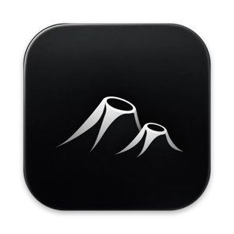
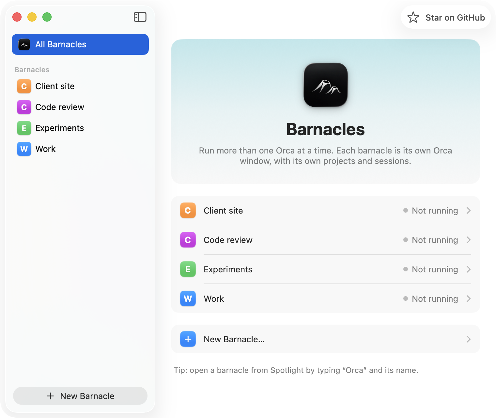

Barnacles
Run several Orca instances side by side on your Mac, each with its own projects and sessions.
Download for MacBarnacles is a Mac app. Open this page on your Mac to download it.
macOS asks you to confirm it the first time. Here's how
Or install from Terminal:
$ curl -fsSL https://raw.githubusercontent.com/eloigil/barnacles/main/install.sh | bash

One Orca wasn't enough.
Orca lets only one instance run per profile. Barnacles gives each instance its own profile, so they never block each other, and your normal Orca keeps running as usual.
Separate instances
Each barnacle has its own projects, workspaces and terminal sessions.
Your settings, copied
New barnacles start with your Orca's theme, fonts, agents and preferences.
A new window, fast
Right-click Barnacles in the Dock and choose New Orca Window, or press ⇧⌘N.
In Spotlight and the Dock
Every barnacle gets a launcher with a colored badge. Search “Orca Work” to open it.
Opening it the first time
Barnacles isn't notarized by Apple yet, so macOS asks you to confirm it the first time. You only do this once. (The Terminal install above skips this step.)
- Open Barnacles.dmg and drag Barnacles into Applications.
- Open Barnacles. macOS says it can't verify the developer. Click Done.
- Open System Settings → Privacy & Security, scroll down and click Open Anyway next to Barnacles, then confirm.
You need Orca installed. Barnacles never touches your code or repositories; deleting a barnacle moves only its Orca data to the Trash.
Get Barnacles
Free for macOS 14 or later, on Apple silicon and Intel.
Download for Mac